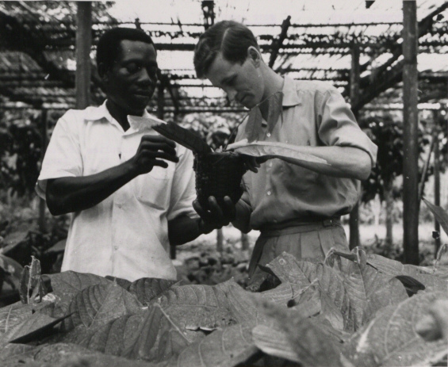

HISTORY ABOUT GHANA'S AGRICULTURE
Under British colonial rule, Ghanaian farmers seized the opportunity to efficiently grow and export cocoa for the large British market, given that they had a safe food supply. The labor force needed for the labor-intensive production of cocoa in Ghana's fertile south was mainly constituted of migrant workers from the savannah of northern Ghana. This development was facilitated by the traditional Ghanaian system of communal purchase of land, which gave individual farmers the security of planting a cocoa tree that would take several years until being ready to harvest. Among other factors, this enabled Ghana to grow from zero in 1891 to the world's largest cocoa exporter in the world by 1911.
.
The first president of Ghana, Kwame Nkrumah attempted to use agricultural wealth as a springboard for the country's overall economic development, Ghanaian agricultural output has consistently fallen since the 1960s. Beginning with the drop in commodity prices in the late 1960s, farmers were faced with fewer incentives to produce as well as with a general deterioration of necessary infrastructure and services. Farmers have also had to deal with increasingly expensive inputs, such as fertilizer, because of the overvaluation of the cedi. Food production has fallen as well, with a decline in the food self-sufficiency ratio from 83 percent in 1965–66 to 71 percent in 1900–80, coupled with a fourfold increase in food imports in the decade prior to 1982. By 1983, when drought hit the region, food shortages were widespread, and export crop production reached an all-time low.When the Rawlings government initiated the first phase of the Economic Recovery Program (ERP) in 1984, agriculture was identified as the economic sector that could rescue Ghana from a financial ruin. Accordingly, since that time, the government has invested significant funds in the rehabilitation of agriculture. The government had directed capital toward repairing and improving the transportation and distribution infrastructure serving export crops. In addition, specific projects aimed at increasing cocoa yields and at developing the timber industry had been initiated. Except for specific development programs, however, the government had tried to allow the free market to promote higher producer prices and to increase efficiency. page3